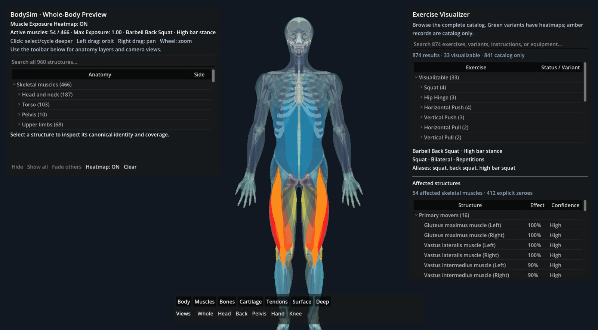
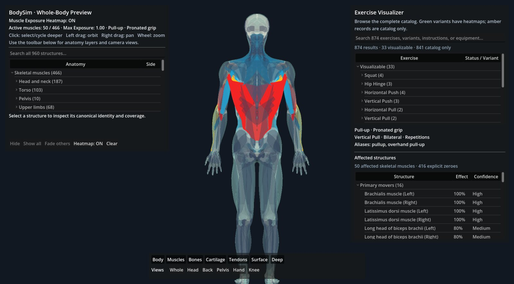
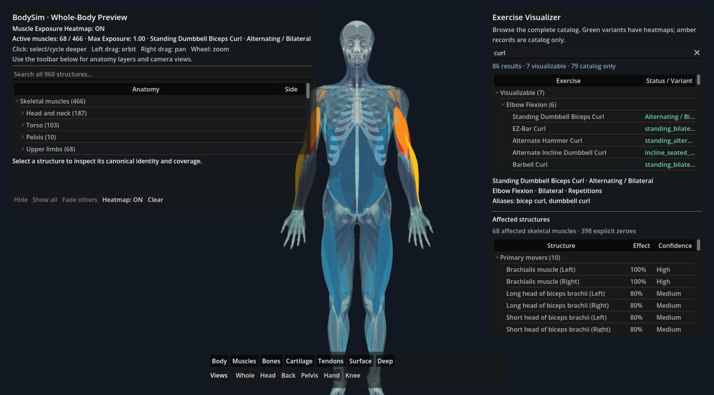
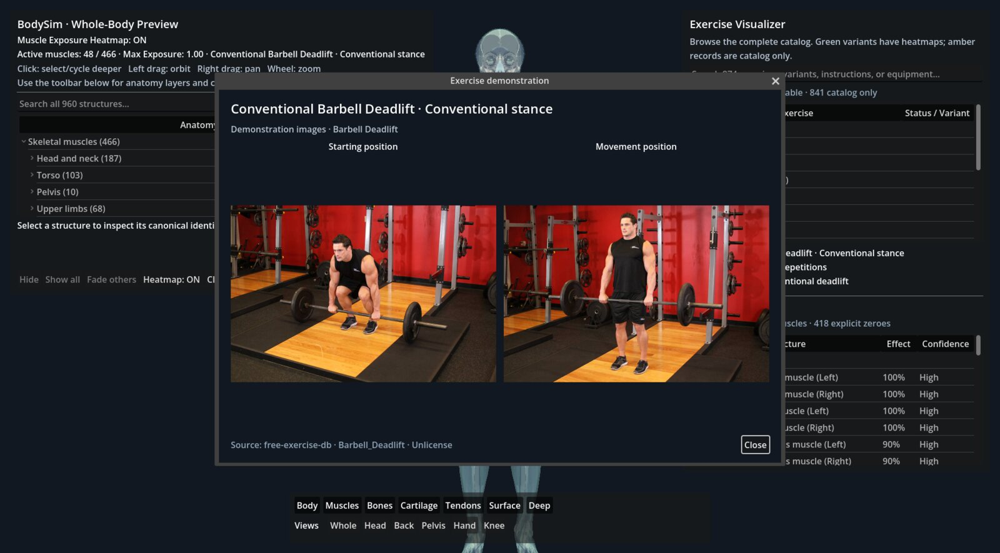
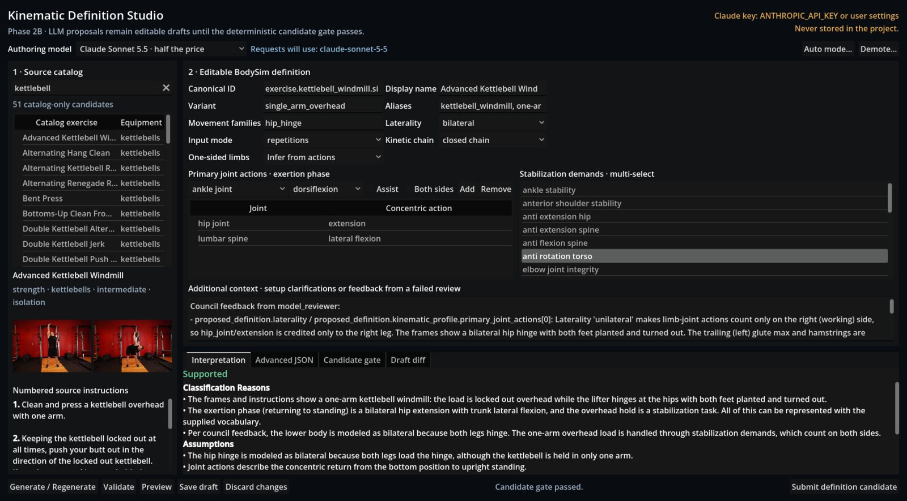
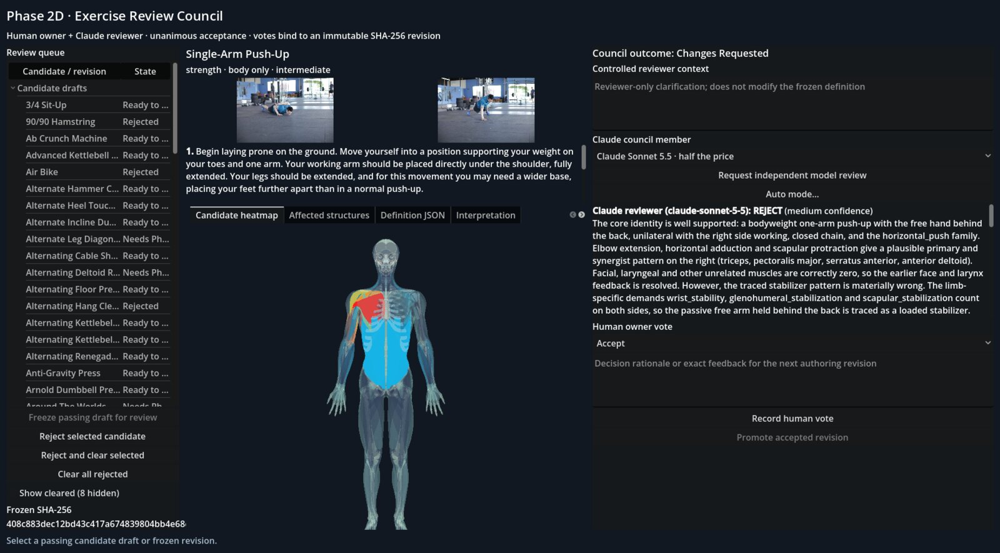

Personal project · Godot 4 · 2026
Which muscles does an exercise actually work?
Pick an exercise and BodySim shows its muscle engagement on a full 3D model of 466 skeletal muscles: which ones move the load, which assist, which hold you steady, and which aren't involved at all.

The problem
Exercise databases describe muscles coarsely: "primary: biceps, secondary: forearms." They don't say which side works, what holds the body steady, or which of the hundreds of muscles in the body aren't involved.
Mapping hundreds of exercises onto 466 muscles by hand doesn't scale, and asking a language model for a muscle list gives answers you can't check. BodySim describes each exercise as joint movements instead, and derives the muscles from them with a deterministic tracer, so every result can be traced back to a rule.
How it works
An anatomy pipeline, a deterministic tracer, and an authoring workflow where an AI drafts and a review council decides.
A full-body model
960 musculoskeletal structures extracted from the open Z-Anatomy atlas through a Blender pipeline, cross-referenced to standard anatomical terminology (TA98), and split into regions that Godot loads and colours per muscle.
Joint movements to muscles
Each exercise is a set of joint actions, stabilization demands and laterality. A curated, weighted muscle-action table turns them into a 466-muscle profile: primary movers, synergists, stabilizers, and explicit zeros.
Drafted by AI, accepted by vote
Claude drafts each definition from the exercise's instructions and photos. Deterministic validators check it, the draft is frozen under a SHA-256 hash, and it goes live only when the owner and an independent Claude reviewer both accept it.
Results
The catalog grows one reviewed exercise at a time.
Catalog
Exercises searchable, with demonstration photos. 33 are fully visualizable so far, each one through a unanimous council vote.
Complete profiles
Every visualizable exercise assigns every skeletal muscle a role or an explicit, reviewed zero. Nothing is left blank.
A strict reviewer
The share of drafts the Claude reviewer rejected. Its findings exposed three limits in the tracer, which version 3 now handles: one-sided loads, minor joints and mixed laterality.
Screenshots




